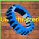
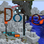

Lost in Space
We must get back to earth! Using the technology on your stranded ship make it back to earth and continue to the future!
Untechinized
What is this world with 2 mods?! You must survive with mekanism and thermal in order to enter the other mods this pack has to offer!
DOPE
This Modpack is Insane! This pack offers the end game that you can never imagine! Use all the mods you can in order to end this modpack!